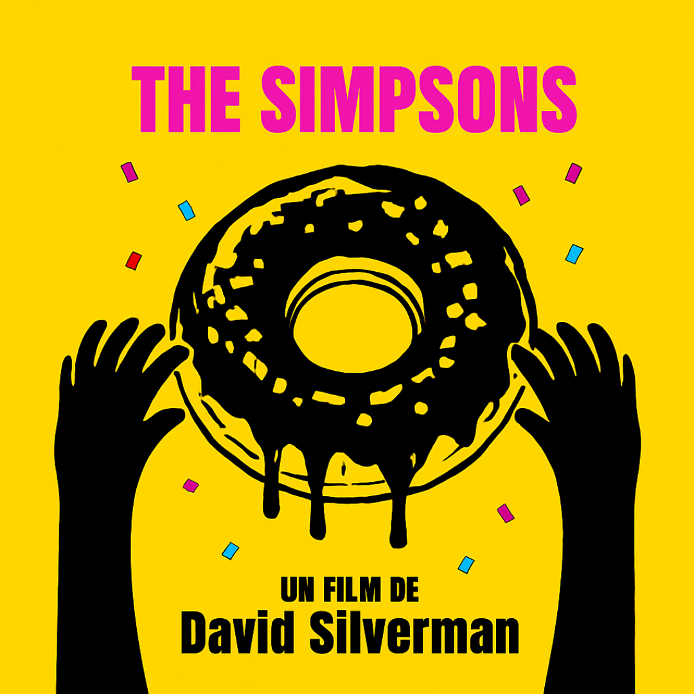
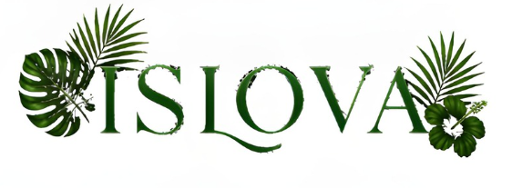
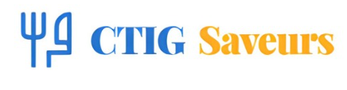

CAPITULUM · III
Projets
— Opera et Inventiones —
'">
Affiche · Simpsons
Affiche minimaliste · 2007
Composition typographique inspirée du film culte.

Logo · Green Pitch
Identité visuelle · Club football
Charte graphique complète pour club de football.

Montage Football
Édit vidéo · TikTok
Rythme, transitions et bande-son au cœur du projet.
Voir la vidéo

Chains & Crowns
Application d'échecs · JPO
Jeu d'échecs interactif conçu pour la Journée Portes Ouvertes.

Lays Racines
Chips agricole · Concept de marque
La chips la plus agricole possible — filières locales & éco-responsabilité.

Islova
Culture guadeloupéenne · Accessoires
Valoriser l'identité créole à travers le design et l'artisanat local.
Visiter le site

CTIG Saveurs
Gastronomie locale · Producteurs labellisés
Ateliers, dégustations & rencontres avec les producteurs locaux.
Visiter le site
SOS DLO
SOS Dlo
Solidarité alimentaire · Guadeloupe
App mobile géolocalisée pour l'accès à l'aide alimentaire — 971.
THE MAD SHOP
The Mad Shop
Stratégie digitale 360° · Maroquinerie
Diagnostic, tunnel de conversion neuro-marketing et plan e-réputation.
KARU LODGE
Karu Lodge
Positionnement stratégique · Écolodge
Étude de cas — stratégie et positionnement d'un écolodge guadeloupéen.
STARLINK
Starlink vs ISP
Analyse · Disruption numérique
Impact de Starlink sur les fournisseurs d'accès internet traditionnels.
ANGEL · MUGLER
Angel Mugler
Moodboard · Design graphique
Univers nocturne et puissant pour Angel de Mugler — palette nuit et étoiles.
SPOT PUB
Spot · Angel Mugler
Spot publicitaire · 30 secondes
Conception complète d'un spot TV/réseaux — synopsis, storyboard et découpage technique.